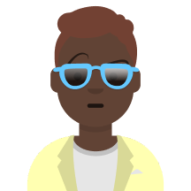
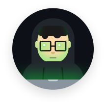
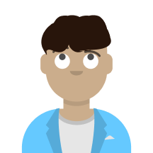
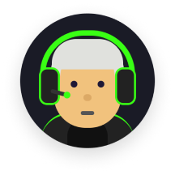
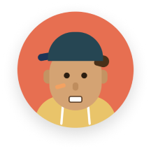

Democratizando la creación
musical
SharedBeats es una plataforma innovadora que combina la música libre de derechos
generada por usuarios con el poder de la Inteligencia Artificial, diseñada
específicamente para creadores de contenido.
Nuestra Misión
Detectamos un problema real: los creadores de contenido (estudiantes, YouTubers, streamers) dedican demasiado tiempo buscando música sin copyright que encaje con sus proyectos. Nuestra misión es ofrecer un ecosistema donde encontrar, crear y compartir música sea intuitivo, legal y colaborativo.
El Origen
SharedBeats nace como un proyecto académico (DCU I) para el TecnoCampus, en el Grado en Enginyeria Informàtica i Sistemes de la Informació (GEISI). Desarrollado bajo la asignatura de Interacción Persona-Ordenador (IPO), aplicando principios de Diseño Centrado en el Usuario.
Nuestros Pilares
Generación IA
Comunidad (UGC)
Experiencia Inmersiva
El Equipo Fundador
Grup 101 - Diseño Centrado en el Usuario

Luis Anthony
UX/UI Designer
Marc Castellà
UX/UI Designer
Jofre Escribà
UX/UI Designer
Pol Cerezo
UX/UI Designer
Oscar Corbacho
UX/UI Designer